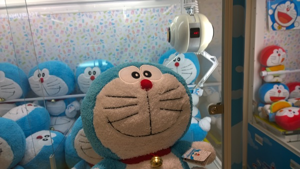
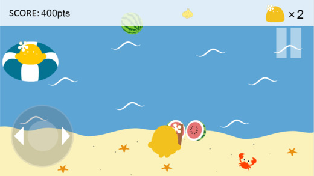
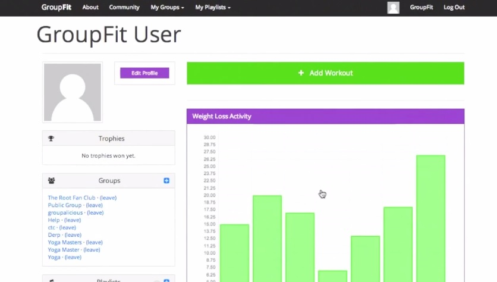

Hi, I'm Mary Ann. I am a senior studying Computer Science at the Massachusetts Institute of Technology. I currently live at WILG. I was born in Texas and grew up in North Carolina, where I attended the North Carolina School of Science and Mathematics. I love video games and food.
Here is a picture of me frolicking in the fields of Furano over the summer:
My stranger interests include personal finance and collecting cute plushies, such as this guy:
Summer 2014:
While interning at Internet Business Japan, I created a summer-themed game for the HWC mascot, Howaco. I was tasked with both design and implementation, and came up with the idea for the game when I learned of the traditional Japanese summer game, suikawari. The game is available online and in the App Store.
January 2014:
As part of the 6.470 Web Programming Competition, I created a group-based exercise website, GroupFit, with 3 other team members. I was tasked mainly with UI Design and implementation, such as the activity graphs and input forms.
The site won an Honorable Mention in the competition.
MARY ANN JIN
- jinm@mit.edu
- http://majin.mit.edu
- 919-412-4722
Education
Massachusetts Institute of Technology
Candidate for B.S. in Computer Science and Engineering
June 2016
GPA: 4.9/5.0
Employment
Front End Engineer Intern
Jun - Aug 2015
• Worked on News Feed, developing features for the core Facebook experience
• Finished original project 7 weeks early, joined a new product team for remainder of internship
• Utilized: HTML/CSS, JavaScript (React), PHP (XHP)
Internet Business Japan - HWC
Web Engineer Intern
May - Aug 2014
• Designed and developed HTML5 game for the company mascot
• Published game on company website and in the App Store
• Created a Google Maps app for displaying client locations/information
• Utilized: HTML/CSS, JavaScript (jQuery/EaselJS), PHP, SQL, Google Maps API, Adobe Creative Suite 6
IBM
Software Developer Intern
May 2013 - May 2014
• Created a plugin that integrated cloud-based video selection into IBM product
• Presented to product manager, program director, and marketing manager
• Continued remotely during school year with team to create production version
• Plugin deployed with newest version of product
• Utilized: HTML/CSS, JavaScript(dojo), JSP, Java
IBM
Software Developer Intern
May - Aug 2012
• Created a web plugin for internal database management
• Presented plugin to department managers and Program Manager
• Utilized: HTML/CSS, JavaScript(dojo), JSP, Java
University of North Carolina at Chapel Hill
Enabling Technology Intern
Aug 2011 - Feb 2012
• Designed and developed game for improving literacy in language-impaired children
• Presented game and research to students, parents, alumni, and faculty
• Utilized: HTML/CSS, JavaScript(dojo, EaselJS)
Skills
Fluent in English
Professionally proficient in Mandarin and Japanese